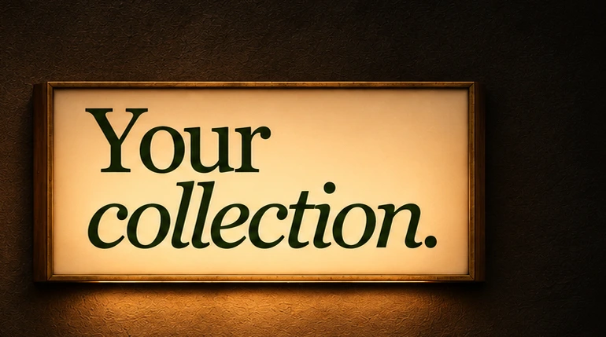

The listening room.
A first look inside Kissaten.
About the film
The door opens onto the record shelves. A handwritten lightbox hangs above the console.
A record you know by heart.
A station on the other side of the world.
Kissaten is a listening room on your iPhone for the music you keep and the stations you tune into.
Spend a morning in Brussels, an evening in Tokyo. Tune in to live stations from your iPhone.
Explore Radio
Bring your own music or Spotify playlist and listen offline, ad-free, all day.
A first look inside Kissaten.
The door opens onto the record shelves. A handwritten lightbox hangs above the console.
Bring a recording from Files into your collection. Make a playlist and take it offline.
Two listeners open a blue record sleeve and follow a track in the liner notes.
Independent radio brings the sound of another city into the room. Follow the globe from Brussels to Tokyo and Melbourne.
Two listeners sit above the harbour. Reflections on the windscreen lead down to the car radio.